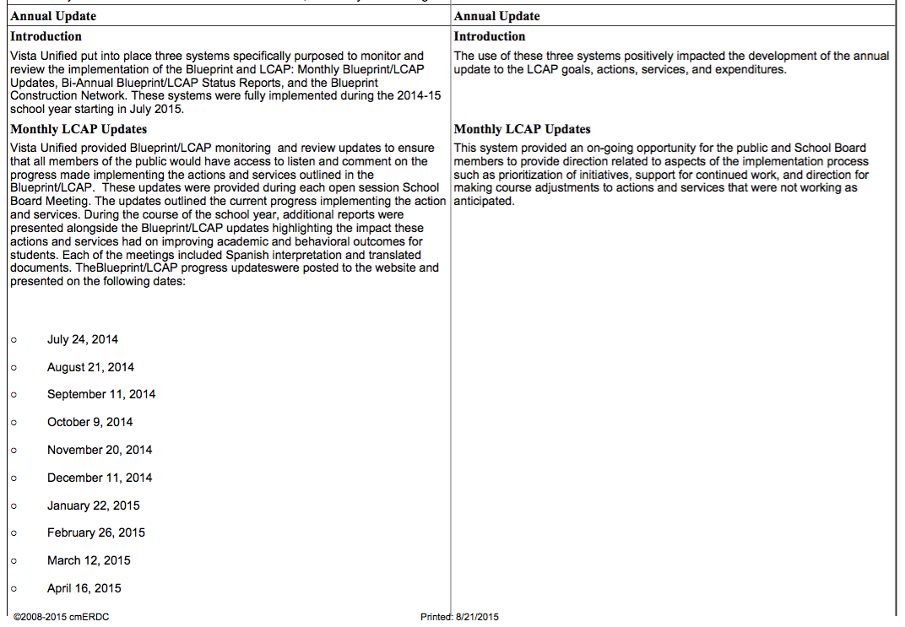
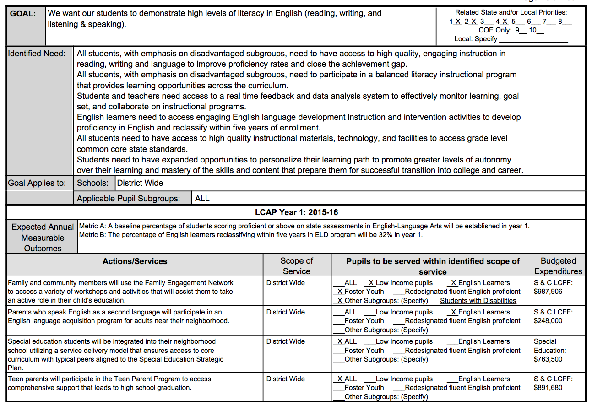
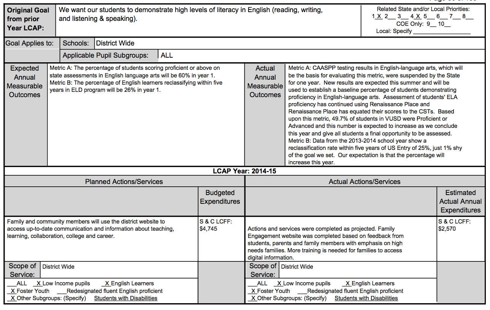

<div class='featurePanel scroll1 tqTest' id='automaticReportGeneration' title='Automatic Submittable WBWF Report'>


<div class='proposition'>
	2) Generate the Report
	</div>
<div class='explanationContainer narrowWindowDeleteIdClass' style='' title='CLICK TO START/STOP SLIDE SHOW ANIMATION'>

	
	
	
	
	

</div>
<div class='conclusion'>
Completely Automatic Report Creation
</div>

	<div class='featureLogo'><!logo!></div>
</div>